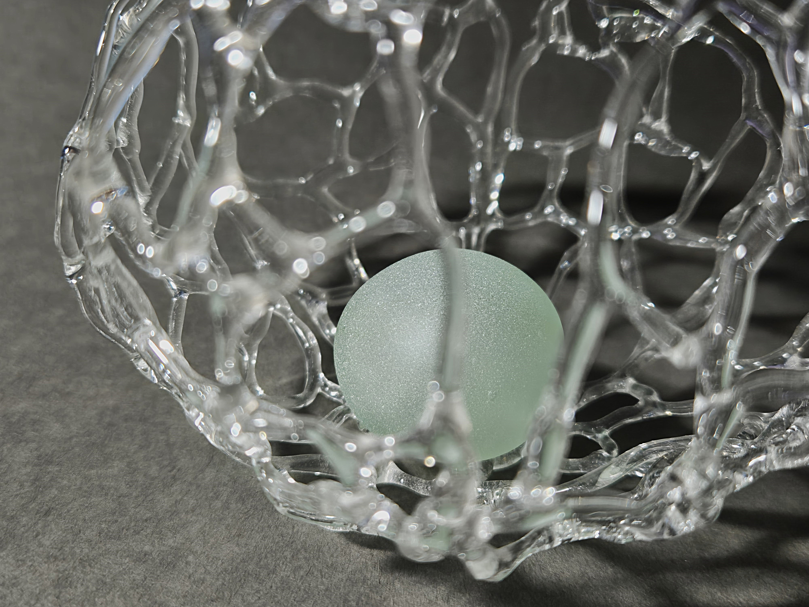
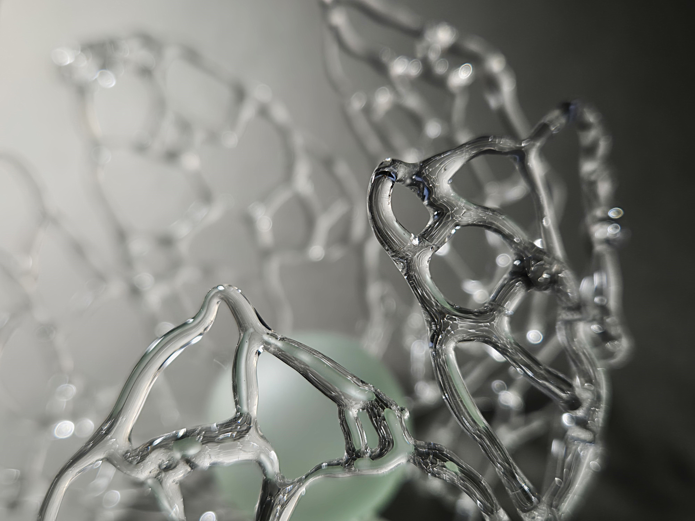
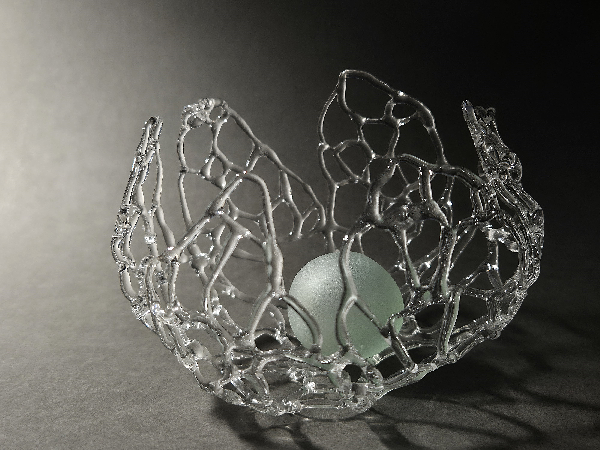

Metamorfoza descompunerii - II
Motivația a acestui proiect își are rădăcinile dintr-o fascinație personală pentru efectele optice ale luminii și frumusețea adesea ignorată a elementelor naturale degradate. Am fost atrasă în special de ideea de "oprire a timpul" în anumite faze ale transformării plantelor, mai exact planta Physalis. Dorința de a capta momente efemere și a le oferi o nouă viață, au fost elemente cheie. Lucrările devin o meditație vizuală asupra ideii de reîncarnare nu doar a materialului, ci și a conceptului de frumusețe, redescoperită chiar și în ceea ce este perceput ca un sfârșit. Această explorare a ciclicității vieții și a materialului a ghidat întreaga cercetare.



Înapoi